Kit 0.9.20
A restoration kit for water, mold, and crawlspace work.
From tech to lead, PM, and estimator.
RestoKit: the framework · For the shop · RestoKit tools · Join
Runs on: commercial models only, loaded into the Grok app or a Grok Bot.
Public repo Request a demo: neuresthetics@gmail.com
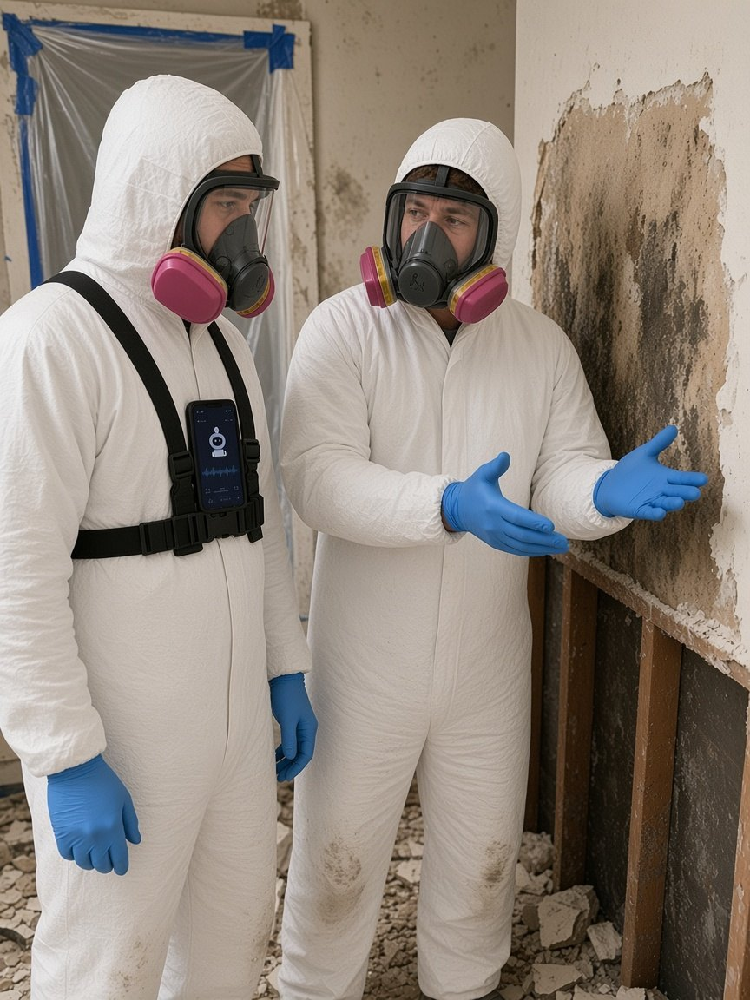
Part one
RestoKit: the framework
RestoKit is the framework: the job stages (phases) and the modules that load into an AI model. The tools built on it have their own section further down.
Old way vs. with agents
Same roles. Fewer handoffs. People move from producing the work product to approving it.
Old way Produce, then chase
- Tech clicks through dashboards and types notes
- PM collects missing data after the stop
- Estimator builds the estimate from scratch
- Bill gets assembled after the fact
With agents Draft live, then approve
- Tech talks on site; agent drafts scope, billables, and equipment checks with photo timestamps
- PM approves — file triage, not data hunting
- Estimator approves or modifies the draft
- Owner reviews the job when they want
The role shift: every seat moves from producing the paperwork to approving it. Fewer steps, fewer handoffs, less fatigue — and the billable trail is written while the work happens.
Why a framework
This isn’t just AI. It’s AI plus a framework of crystallized restoration knowledge: real field judgment from real jobs, structured so every agent makes calls the way an experienced restorer would instead of guessing.
- Near-perfect documentation, at low effort. With RestoKit, every person on the job has a Grok Bot agent, not a chat window. Each agent runs on its own computer, remembers the job, and keeps working in the background while you keep working. It takes input from several people and other bots at once and keeps every thread straight, so the tech’s voice notes, the lead’s calls, and the PM’s approvals all land in the right place. That gets job documentation to a near-perfect standard at a fraction of today’s effort. The restoration knowledge base is the foundation, and that’s what makes it trustworthy instead of the agent guessing.
- Training folded into the work. No matter how long you’ve been in restoration, there’s something new to learn every day. Any tech, lead, or PM can ask about whatever is in front of them, right on the job: “Why are we pulling this pad?” or “What’s dry standard for this subfloor?” They get the answer and the reasoning behind it, drawn from the collective knowledge of the trade, so learning speeds up for rookies and veterans alike. Today it’s comprehensive enough to run mitigation. It doesn’t hold the infinite multitudes yet, but that’s exactly what AI can finally handle, and the kit grows toward it with every job.
- Ready to send. By the end of a job, RestoKit holds the voice logs plus all measurements, materials, and equipment placements needed for a structured PDF you can send to an insurance company. With your company’s approved price lines, that package can stand on its own without a separate estimating platform.
- Anyone can pick it up. Task lists stay hand-editable. Someone not using RestoKit can open one, see what’s done, half done, and still to do, pick up where the last person left off, and check a box. Crews don’t have time to write long lists, and hand-written lists are sloppy and rarely read.
Knowledge drawn from seven restoration companies
Built from the field across tech, lead, production manager, PM, and estimator roles at:
- Servpro of Southwest Portland
- Oregon Restoration
- Servpro (Hillsboro)
- BluSky Restoration
- Roto-Rooter
- Restoration One
- Sarkinen Home Services
That spans the lowest-billable shops to the highest-quality ones, so the kit knows what cutting corners looks like and what doing it right looks like.
Work history only. No affiliation or endorsement implied.
A living shared standard
Every employee’s Grok Bot agent runs on the same decision standard. As the crew learns, the kit picks up their edge cases and the solutions they agree work best.
That standard feeds real-time decisions — including justifications to an insurer about why a line is billable — with the reason attached. Two shops on the kit can say they make trade decisions the same way, without waiting on the next printed edition of a standards book.
- Edge cases stay in the kit The rare ones don’t come up often enough to stay top of mind. The standard carries them, so you carry less of that inventory in your head.
- Field-proven editions Growth still goes through review by experienced field techs. Once an edition is verified, everyone gets it at the same moment.
- Tradecraft plus context The network also adapts to material costs, the economy, and laws — and stays tied to the numbers so billable items come out while the work is happening.
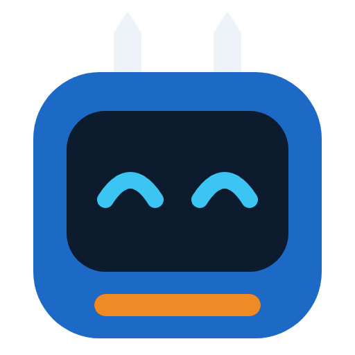
Scope to billing, made easyEvery billable item carries a real reason, down to the specifics of that job. Adjusters get a clear window into the services you provided and why — not a stack of lines with no trail.
That is the claim trail from the stop, written for the person who has to defend it.
- The claim trail rides with the work Photos, moisture, why the equipment is there and where it sits, and a short note happen on the stop, not at the end of the day.
- Carriers read the data, not the logo Insurance carriers care what’s in the file, not which software made it. A file laid out close to the format carriers already see for that job type gives them no reason to push back, because it carries all the required data, and usually better data than most restoration companies send today. Well-organized files move through review faster, which means less back-and-forth and faster payment.
How it works
Set it up once. After that, you talk and you approve.
-
Connect it once
We set up your agents and connect them to the software you already run, like your job-file system, so each role gets the views and approvals it needs. Your crew adds the Grok Bot app. You still work in your existing software, but production gets cleaner and less tedious, and anyone who prefers working in it by hand still can, just as they do today. That also opens the job file to people who aren’t technical: if you can talk, you can document.
-
Walk the job and talk
Say what you see as you go: “Kitchen, Cat 2 supply line, LVP over ply, wet 4 feet up the base.” The agent keeps the notes and matches them to your photos by time, so you aren’t typing and clicking on site.
-
Ask when you need a second brain
“Remove or dry this LVP?” “How many air movers for this room?” “Is the subfloor at dry standard?” You get a short, field-ready answer grounded in IICRC S500 and S520, with the why if you want it.
-
Approve what it drafts
Scope lines, moisture logs, and notes come back as drafts with the reason for each one. You approve, edit, or reject, and nothing gets written to the file without you.
-
Done as you go
No more writing reports at the end of the day. Approved work goes straight into the build and the job file, so it’s finished while you’re still on site. The PM, the estimator, and the owner see the same current record, and the billing already has its reasons attached by the time the job closes.
What’s inside
- Five gated phases From Survey & Estimate to Closeout, so safety steps don’t get skipped. Hold is a status a job can enter from any phase.
- Modules Category, remove vs. dry, containment, negative air, equipment sizing, mold, crawlspaces, hazard sampling, and more.
- Base science RH, temperature, GPP, vapor drive, wicking, material behavior, dry standards.
- Field lessons From daily job logs, added only once they prove out on real jobs.
For the shop
Not more software. Agents that pilot what you already use.
RestoKit is not another app to learn, license, or click through. It is a restoration knowledge backbone plus Grok Bot agents that help your people pilot the software you already run — any tool with an API.
The agents are an intelligent bridge between restoration knowledge and the decisions that produce scopes, billable items, estimates, and bills. That puts your trainer and standards keeper in the same line as the people writing the scope.
- Compress the dashboard fatigue Huge screens of buttons put a speed limit on how good documentation can get. An agent on a restoration-logic framework builds scope sheets in real time, handles email, and talks to your other apps.
- Answer the “no more software” reflex This is not LiDAR or another feature pack. It is coordinated information flow between apps and people on Grok Teams, backed by the kit.
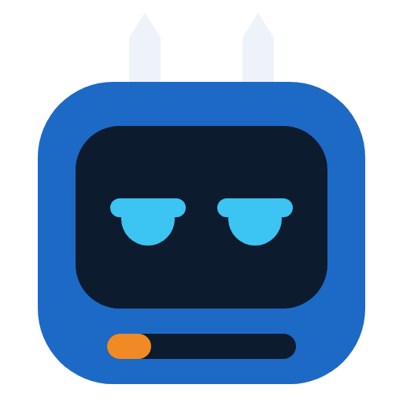
Less clicking. More field time.Running a documentation app fluently takes a huge number of taps a year, even with heavy voice-to-text. Working by audio takes that fatigue off the tech and gives them an agent that recalls restoration knowledge on the spot.
The same agent calculates cubic footage for quick equipment checks. Those numbers flow straight into billable items when the equipment is placed, and they stay united with the photo data by timestamp.
By our field estimate: operating Encircle fluently can cost a technician roughly $1,000–$2,000 a year in button-pushing time. That figure is Jason’s field estimate from shop experience — not a published study.
Customer service: every party on the same page
While the tech talks to the agent on site, the homeowner — often in the next room — hears exactly what’s affected, why, and what’s going on with the environment. It’s the same information they’d see in their file, so they don’t have to request and read it after the fact. They can be live with you on the project if they want.
They also hear that every billable item comes from the reason for the work. That is a streamlined, high-quality information experience for the person whose home it is.
Time pressure in this trade can push documentation to the edge. When honest, reason-backed documentation is faster than cutting corners, everyone wins.
One shared, reason-backed record pulls the materially interested parties together:
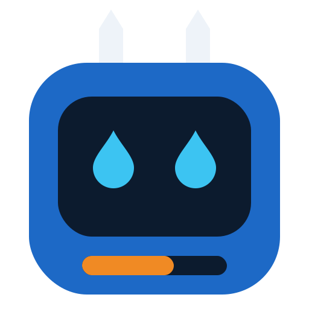
Owner vision: a tree of botsEveryone is paired with an agent. The owner can query profit and loss anytime, or open a specific job down to the photos just taken — close enough to step onto the job site without leaving the office.
One owner view across every seat — P&L on demand, or any job down to the latest photos. Every node is a person + agent.
This is one example layout. Arrange the seats and agents any way your company runs: add roles, change who reports to whom, or group by crew, branch, or job type.
Who it’s for
- Tech The job flow in order, with safety checks called out when they matter: category, electrical, crawlspace gas.
- Lead Containment, negative air, equipment sizing, and crew and labor calls.
- PM Hold status, work authorization, daily drying readings, and verification before teardown.
- Estimator The Phase 0 survey and scope, remove-vs-dry and category calls, plus documentation that backs up the scope.
- General manager Every job’s status across crews and PMs in one current record: what’s stuck, what’s on hold, and who’s on what. You don’t have to chase updates.
- Owner Real-time vision over the whole company. Query profit and loss whenever you want, or drill into any job down to the photos just taken.
What it is
RestoKit is a structured JSON kit for anyone running a restoration job. It’s grounded in IICRC S500 (water) and S520 (mold) principles, and written the way a senior tech talks a job through.
It doesn’t replace years on the job. It carries lessons from people who’ve spent decades in the trade. Its main job is memory: the rare edge cases that don’t come up often enough to stay top of mind.
Where it’s headed: every restoration field
Water and mold make up most restoration jobs, and that’s where RestoKit’s field knowledge runs deepest. It already covers contents at a basic level, and fire jobs share most of the same structure. A fire job is largely a water and mold job with different cleaning and demo. The plan is to deepen each of those fields and grow the same standard across the whole trade, built from real jobs and through the same distributed, field-proven review. That way one company can run every kind of loss on one standard with one set of agents.
The kit
Want to dig into what the kit covers and how it’s laid out? See the full repo on GitHub.
Part two
RestoKit tools
These screenshots are one rendition of interconnected data for the whole restoration process — file storage, handling, and day-to-day operation. They were built as a one-off for a single company that was already using Encircle.
A shop can run whatever file software fits: who sees what, and what each role can do or approve. Whatever the company needs can be designed on the fly — typically within days. The showcase below is optional proof of one build-out, not a required stack.
Optional tool build-out feature showroom · tap to open
These are the board's tools as they look today, one screenshot each, running on demo data. Every name, job number and address is made up. The board ties into the RestoKit kit (the rules), the tower API (serves board.json), read-only Encircle digs (job data), the board manual and scope_bot. Tap any shot to enlarge.
Main page, all sections collapsed
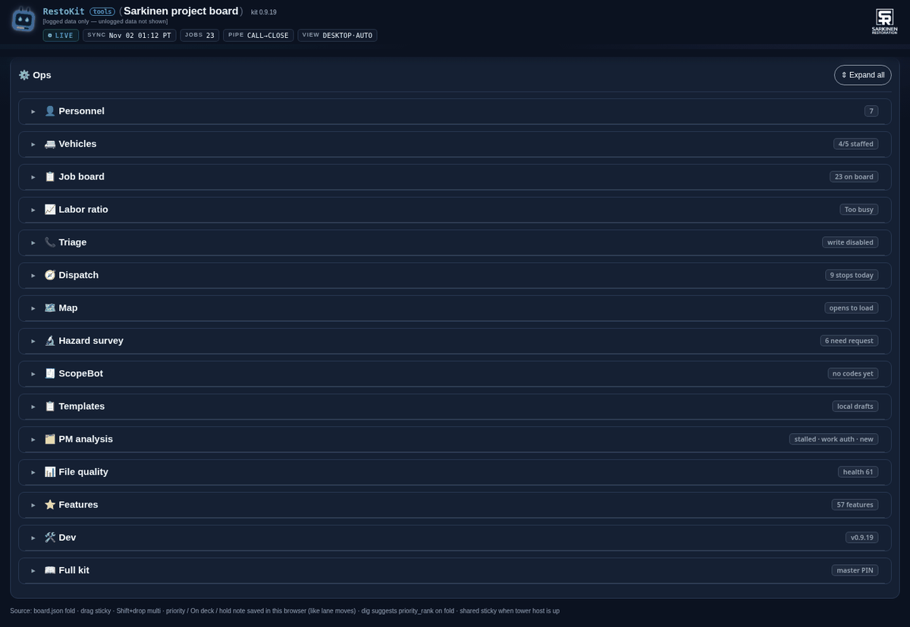
The board's front page. One Ops panel with a collapsible section per tool; each header shows a live count or status (jobs on board, trucks staffed, stops today).
- Collapse all / Expand all
- Sync stamp and job count in the header
- Desktop and phone layouts
Ties in: Reads board.json, which the tower host rebuilds from read-only Encircle digs.
Personnel
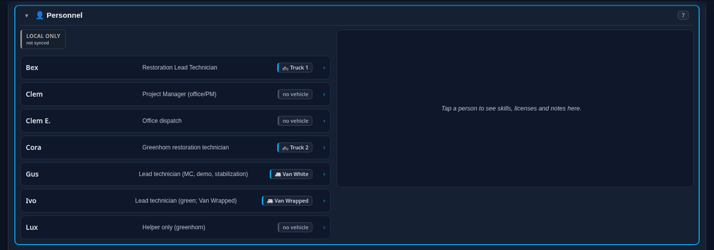
Who is on the crew today, their role and the truck they're in.
- Role and default vehicle per person
- Tap a name for skills, licenses and notes
- Local-only edits, never synced
Ties in: Feeds Vehicles and Dispatch so crews are suggested from people who are actually available.
Vehicles
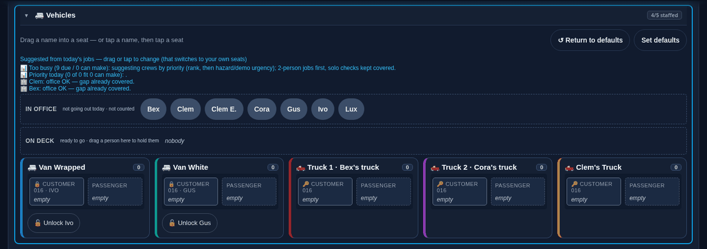
Seats people into trucks for the day.
- Drag or tap to seat a person
- Crew suggestions from today's jobs, two-person jobs first
- Return to defaults / set defaults
Ties in: Uses Personnel plus the job board's due stops; the seats drive Dispatch and the Labor ratio.
Job Digest
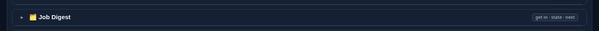
A job-by-job briefing so office and field start from the same picture. Shown collapsed here; the header chip names the three fields.
- Get in: what came in on the job
- State: where the job stands now
- Next: the next action
Ties in: Same jobs as the job board, folded into one short briefing per job.
Job board
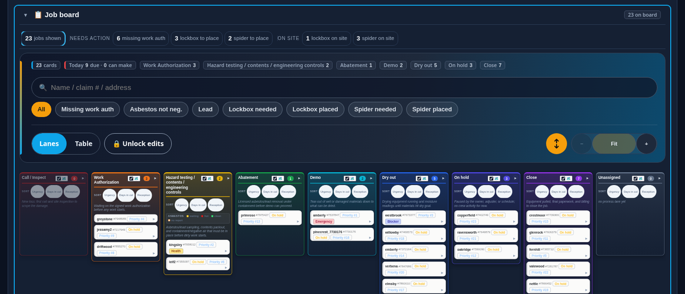
Every open job as a card in the lane for its stage, from call to close.
- Lanes (Call/Inspect, Work Authorization, Hazard testing, Abatement, Demo, Dry out, On hold, Close) or table view
- Needs-action filters: missing work auth, asbestos/lead not negative, lockbox and spider placement
- Locked by default; unlock to edit
Ties in: Lanes follow the kit's phase sequence. Card data comes from the Encircle digs through the tower API.
Labor ratio
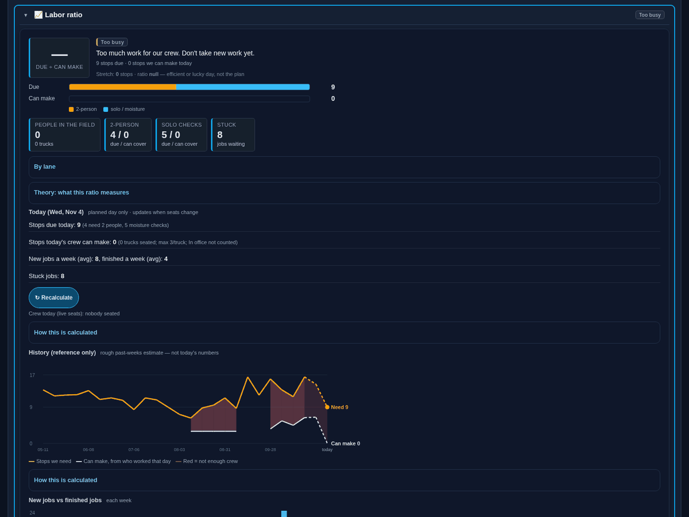
Due stops divided by the stops the crew can make today, as a plain call: OK, busy or too busy.
- Two-person vs solo check coverage
- Stuck jobs by lane
- Short explainer of what the ratio measures
Ties in: Built from the job board and today's Vehicles seats.
Triage
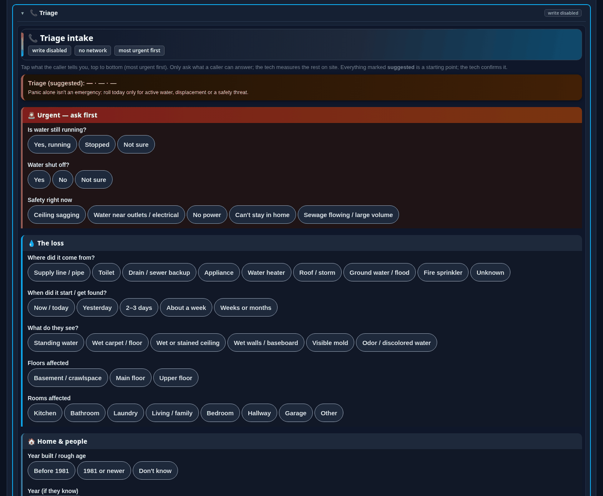
An intake script for the office on a new loss call, most urgent first.
- Tap what the caller says; the board suggests urgency
- Only asks what a caller can answer; the tech measures the rest
- Writes are disabled when offline (as in this demo)
Ties in: Questions and urgency rules come from the kit's intake guidance; a filled intake becomes a new job card.
Dispatch
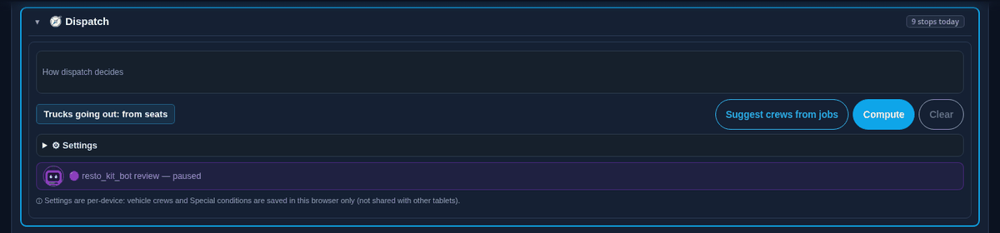
Builds the day's routes from the trucks going out and the stops due.
- Suggest crews from jobs, compute routes, clear
- Per-device settings for crews and special conditions
- Optional resto_kit_bot review of the plan
Ties in: Uses Vehicles, the job board and the Map; route order shows as numbered pins.
Map
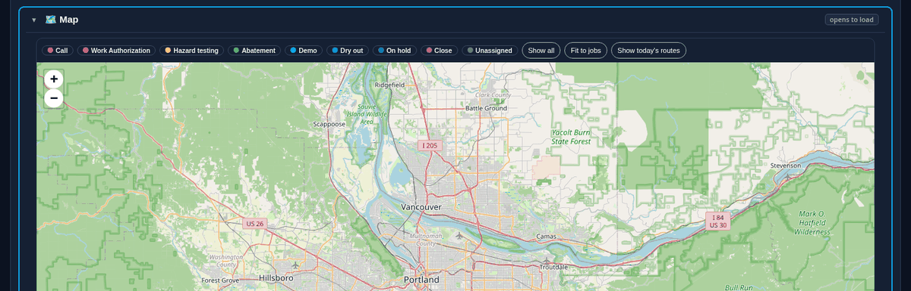
Job pins on a map, colored by lane.
- Lane filters, fit to jobs
- Show today's routes with truck stop order
- Rings mark jobs that need a stop today
Ties in: Pins come from the job board; routes come from Dispatch. (Demo data here has no pins placed.)
Hazard survey
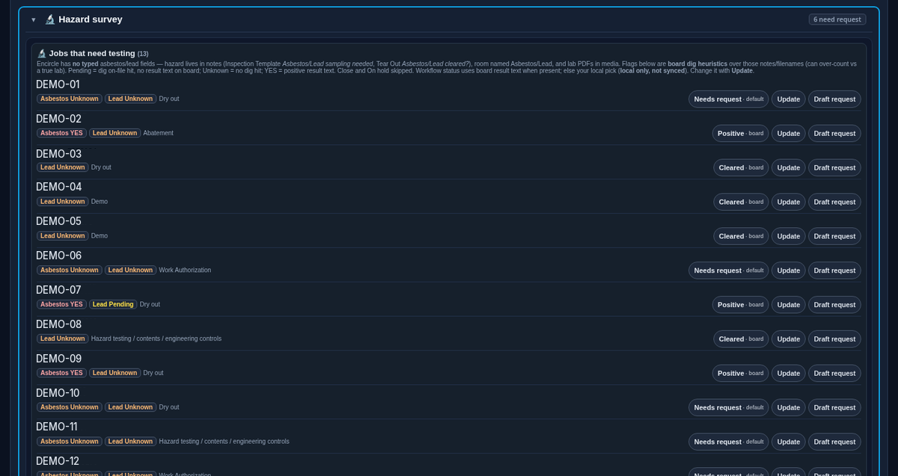
Jobs that still need asbestos or lead testing.
- Pending / unknown / positive status per job
- Close and On hold skipped
- Mark a request locally with Update
Ties in: Read-only from board.json; results gate Demo per the kit's hazard rules.
ScopeBot
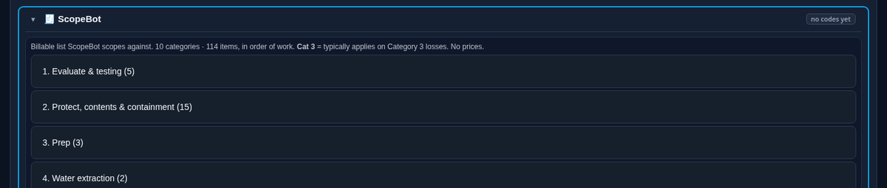
The billable line-item list ScopeBot scopes against, in order of work.
- 10 categories, 114 items
- Cat 3 flags on items that apply to Category 3 losses
- No prices
Ties in: scope_bot reads job notes and photos and maps findings to these items; codes show here once it has run.
Templates
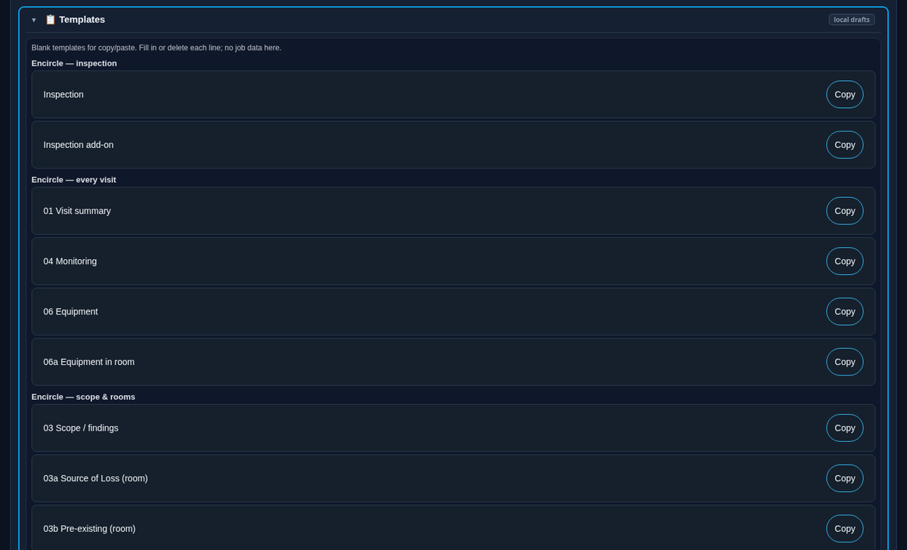
Blank note templates for copy and paste into the job file.
- Inspection, every-visit, scope/rooms, plan and holds
- One-tap Copy
- No job data in the templates
Ties in: Matches the kit's note structure, so notes land in the file the way the file-quality check expects.
PM analysis
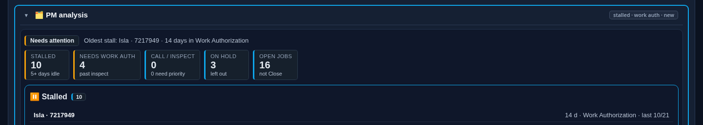
A project manager's view of what has stalled.
- Stalled jobs (5+ days idle), oldest first
- Jobs past inspection with no work authorization
- On hold and open counts
Ties in: Computed from the digs' last-activity dates and the job board lanes.
File quality
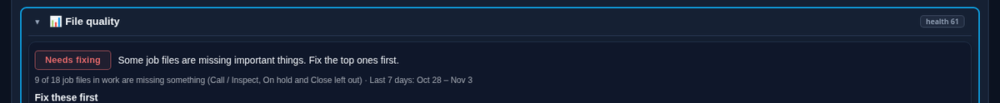
Scores each active job file and lists what's missing.
- Health score and fix-these-first list
- Checks photos per room, notes per visit and recency
- Rolling 7-day window
Ties in: Metrics follow the kit's file-quality chapter; data is read-only from Encircle digs.
Features
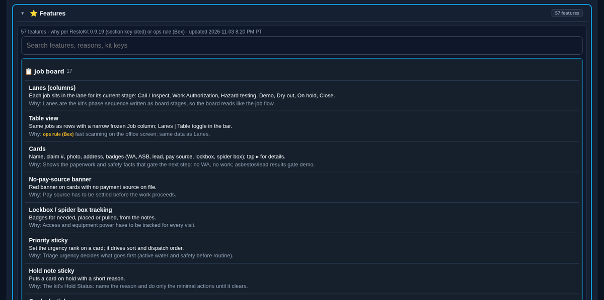
A searchable list of every board feature and the reason it exists.
- 57 features grouped by tool
- Each one says why: a kit rule or an ops rule
- Search box
Ties in: Ties each feature back to the kit version it follows (references hidden in this shot).
Dev
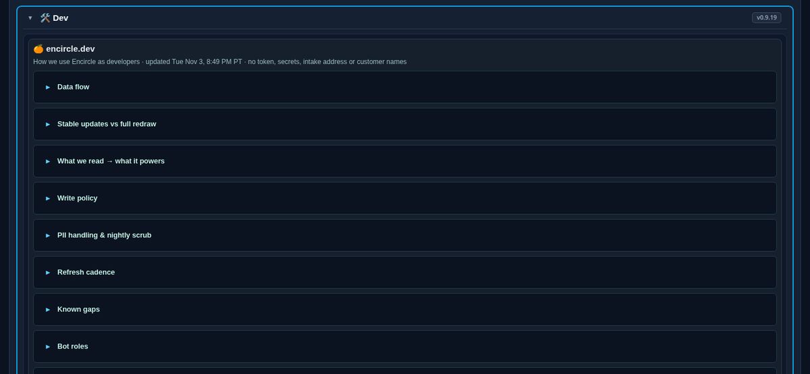
Developer notes and a systems check.
- How the board reads Encircle: data flow, write policy, PII handling, refresh cadence
- Version history
- Live systems check of the tower host
Ties in: Documents the tower API and the read-only Encircle digs. Section bodies are collapsed here.
Manual / Lookup
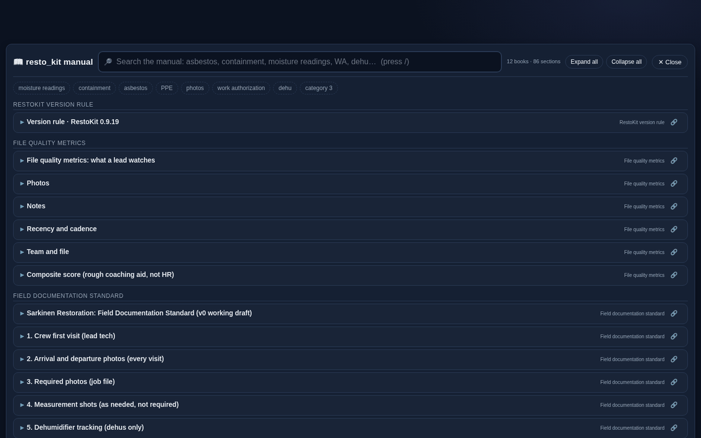
The board manual: searchable chapters with quick-lookup chips.
- Chapters and sections with expand/collapse
- Quick chips: moisture readings, containment, asbestos, PPE, photos and more
- Cross-links into board tools
Ties in: A field reference that follows the kit; only chapter headings are shown here.
Contributors
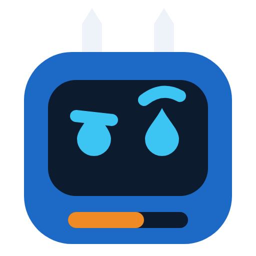
Think you’re better than the kit?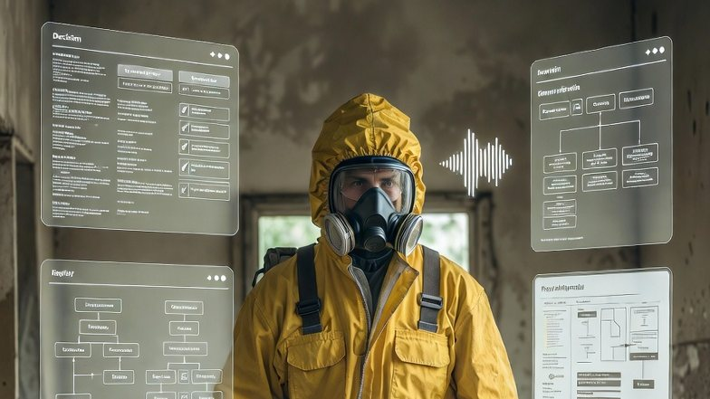
Good. If you can improve it, bring it.
Experienced techs, PMs, and estimators who see a better call in the field — we want that in the kit. Improvements still go through field-proven review, and that review is distributed, not gatekept: the people using the kit approve what goes in, reasoning through each decision together through their agents. That process is what lets RestoKit be a written but living standard. Contributors who help it grow can earn a stake in where it goes; let’s talk about a role in development.
No open call for code dumps. Real field judgment, verified on real jobs.
Join RestoKit: neuresthetics@gmail.com See the public repo